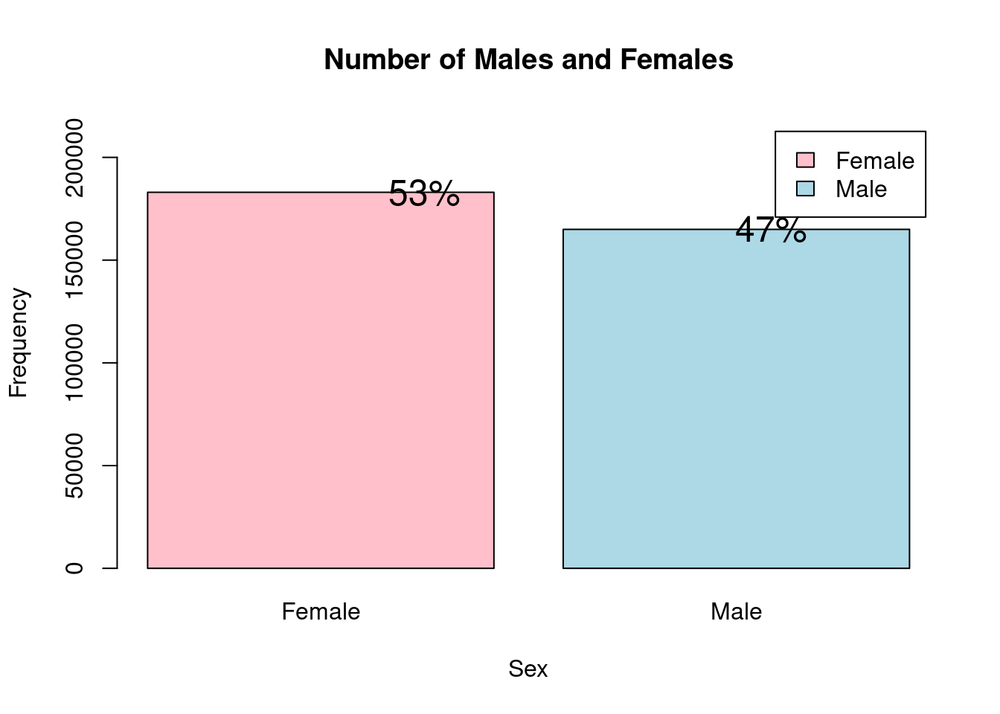
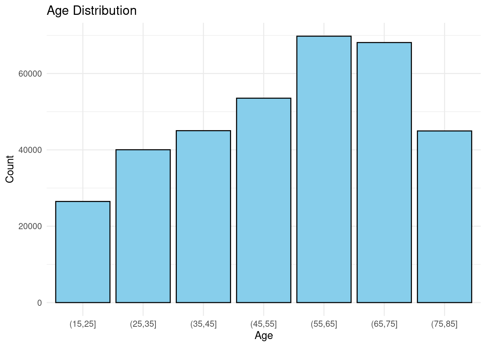
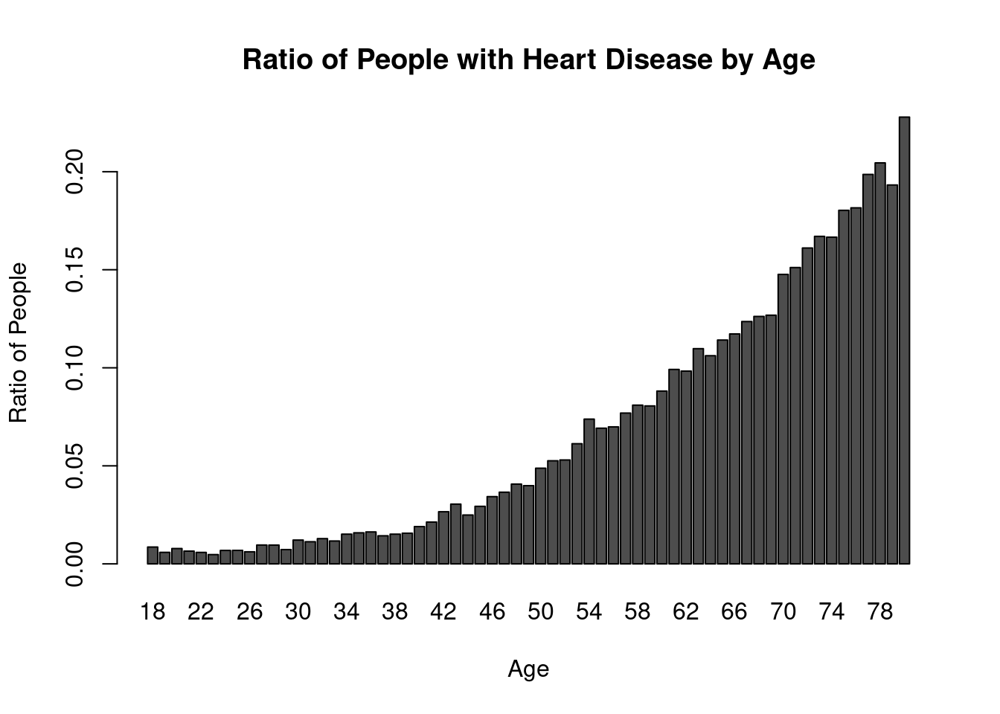
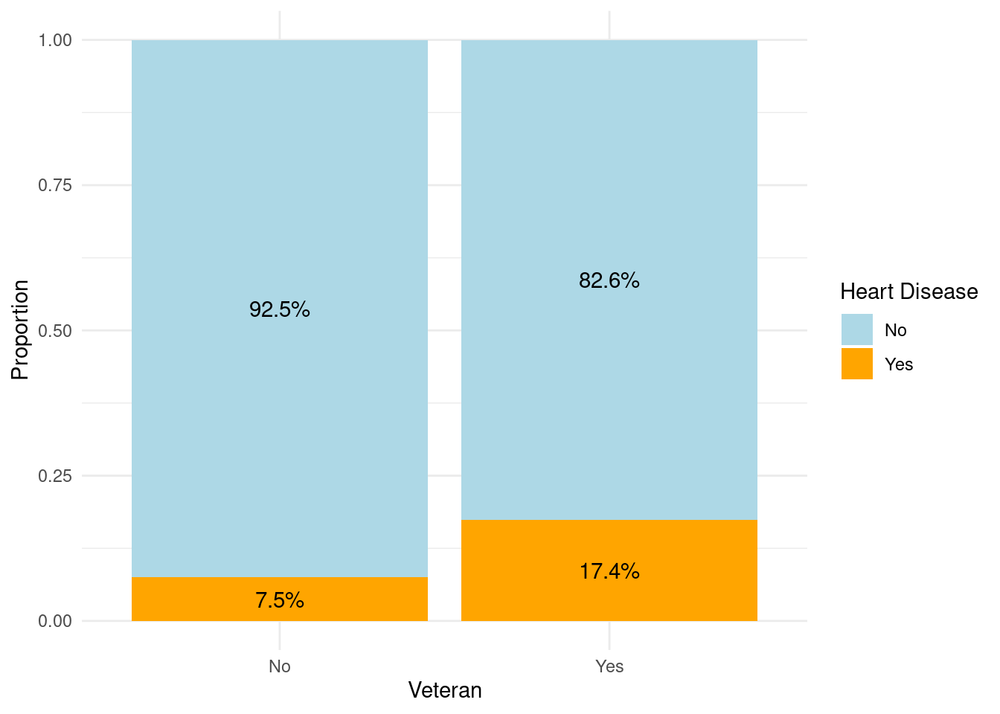
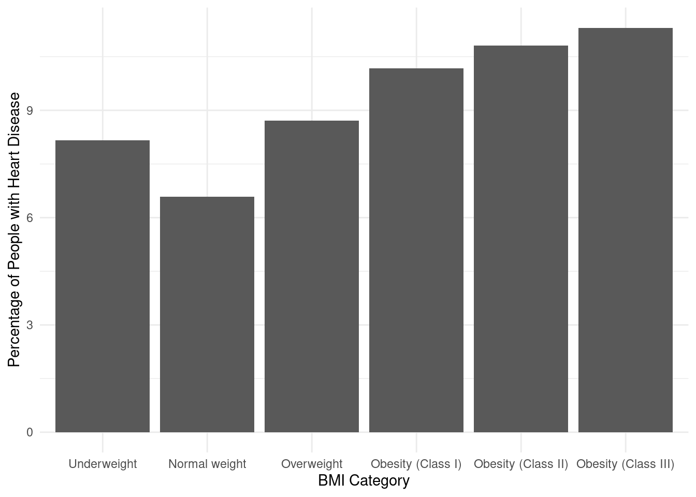
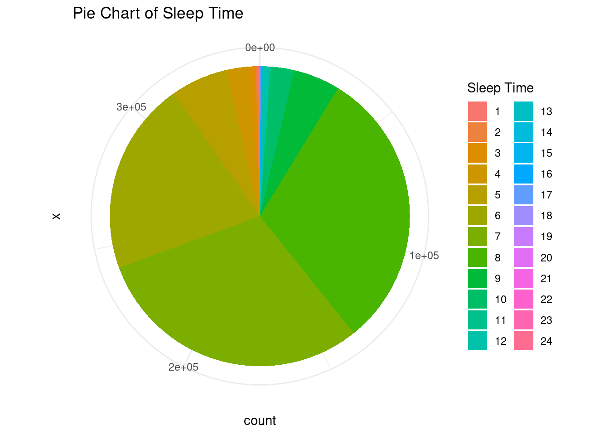
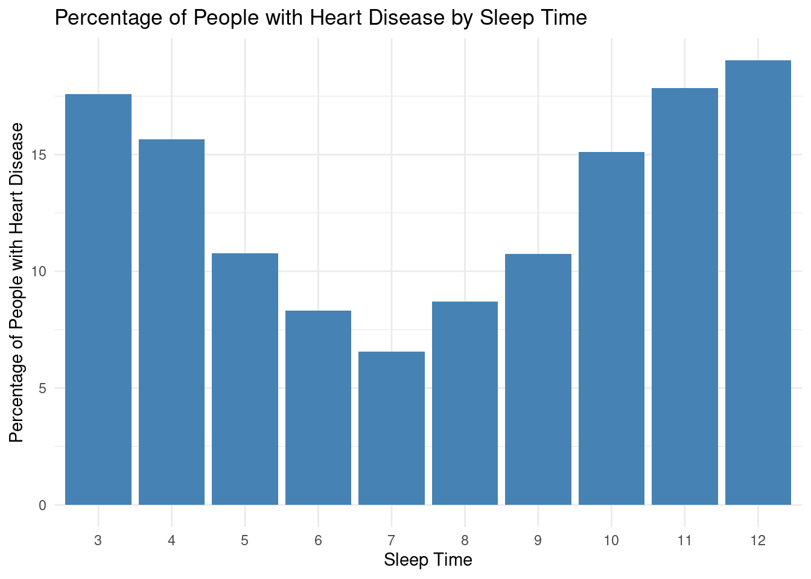
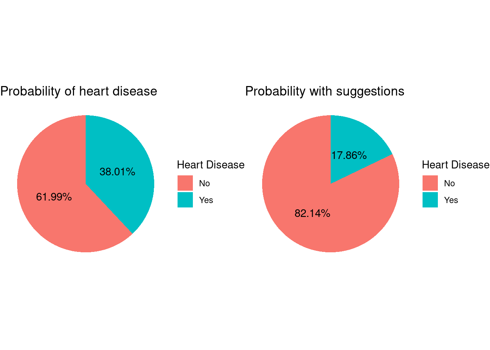

library(tidyverse)
library(readr)
library(ggplot2)
library(cowplot)
knitr::opts_chunk$set(echo = TRUE, warning=FALSE, message=FALSE)Final Project : Aditya Salveru
final_Project_assignment_1
Behavioral Risk Factor Surveillance System (BRFSS)
Project & Data Description
Part 1. Introduction
My projects aims to analyze the heart disease data and explore the causes and general trends in the individuals with and without the heart disease. Particularly I am interested in finding the factors that contribute to the heart disease the most and early signs that might lead to a heart disease. I would also like to analyze the healthy habits that would keep the heart diseases away.
1. Dataset(s) Introduction:
I have chosen the 2020 annual CDC survey data of 400k adults related to their health status collected by Behavioral Risk Factor Surveillance System (BRFSS). For people of the majority of racial groups in the US (African Americans, American Indians and Alaska Natives, and white people), heart disease is one of the leading causes of death, according to the CDC. In the field of medicine, it is crucial to identify and combat the causes that have the biggest influence on heart disease.
The Behavioral Risk Factor Surveillance System (BRFSS) is a collaborative project between all the states in the United States and participating US territories and the Centers for Disease Control and Prevention (CDC). The BRFSS is administered and supported by CDC’s Population Health Surveillance Branch, under the Division of Population Health at CDC’s National Center for Chronic Disease Prevention and Health Promotion. The BRFSS is a system of ongoing health-related telephone surveys designed to collect data on health-related risk behaviors, chronic health conditions, health-care access, and use of preventive services from the non institutionalized adult population (≥ 18 years) residing in the United States and participating areas.
2. What questions do you like to answer with this dataset(s)?
How is heart disease related to physical attributes such as Gender, sleep time, BMI etc.
Is there any particular group of people who are at high risk?
What changes should the high risk people incorporate to reduce the risk of heart disease.
Part 2. Describe the data set(s)
- read the dataset;
columns = read.csv("/home/aditya/Desktop/HealthData/2020/2020-column-layout.csv")
columns$File_Width = sapply(1:nrow(columns), function(y) ifelse(y < nrow(columns),
columns$Starting_Column[y + 1] - columns$Starting_Column[y], 1))
columns = columns[columns$File_Width > 0,]
responses = read.fwf("/home/aditya/Desktop/HealthData/2020/LLCP2020.ASC ", widths = columns$File_Width, col.names = columns$Variable_Name)nrow(responses)[1] 401958ncol(responses)[1] 277- There are 401958 rows in the data set
- There are 277 columns in the data set
responses %>%
colnames() %>%
sort() [1] "ACEDEPRS" "ACEDIVRC" "ACEDRINK" "ACEDRUGS" "ACEHURT1" "ACEHVSEX"
[7] "ACEPRISN" "ACEPUNCH" "ACESWEAR" "ACETOUCH" "ACETTHEM" "ADDEPEV3"
[13] "ALCDAY5" "ASTHMA3" "ASTHNOW" "AVEDRNK3" "BIRTHSEX" "BLDSTOL1"
[19] "BLDSUGAR" "BLIND" "CADULT1" "CAREGIV1" "CASTHDX2" "CASTHNO2"
[25] "CCLGHOUS" "CDASSIST" "CDDISCUS" "CDHELP" "CDHOUSE" "CDSOCIAL"
[31] "CELLFON5" "CELLSEX" "CELPHONE" "CHCCOPD2" "CHCKDNY2" "CHCOCNCR"
[37] "CHCSCNCR" "CHECKUP1" "CHILDREN" "CHKHEMO3" "CIMEMLOS" "CNCRAGE"
[43] "CNCRDIFF" "CNCRTYP1" "COLGHOUS" "COLGSEX" "COLNSCPY" "COLNTEST"
[49] "CPDEMO1B" "CRGVALZD" "CRGVEXPT" "CRGVHOU1" "CRGVHRS1" "CRGVLNG1"
[55] "CRGVPER1" "CRGVPRB3" "CRGVREL4" "CSRVCLIN" "CSRVCTL2" "CSRVDEIN"
[61] "CSRVDOC1" "CSRVINSR" "CSRVINST" "CSRVPAIN" "CSRVRTRN" "CSRVSUM"
[67] "CSRVTRT3" "CSTATE1" "CTELENM1" "CTELNUM1" "CVDCRHD4" "CVDINFR4"
[73] "CVDSTRK3" "DEAF" "DECIDE" "DIABAGE3" "DIABEDU" "DIABETE4"
[79] "DIABEYE" "DIFFALON" "DIFFDRES" "DIFFWALK" "DISPCODE" "DOCTDIAB"
[85] "DRNK3GE5" "DRNKANY5" "DRNKDRI2" "DROCDY3_" "ECIGARET" "ECIGNOW"
[91] "EDUCA" "EMPLOY1" "EXERANY2" "EYEEXAM1" "FALL12MN" "FALLINJ4"
[97] "FEETCHK" "FEETCHK3" "FLSHTMY3" "FLUSHOT7" "FMONTH" "GENHLTH"
[103] "HADHYST2" "HADMAM" "HADPAP2" "HAVARTH4" "HAVECFS" "HAVEHEPB"
[109] "HAVEHEPC" "HEIGHT3" "HHADULT" "HIVRISK5" "HIVTST7" "HIVTSTD3"
[115] "HLTHCVR1" "HLTHPLN1" "HOWLONG" "HPLSTTST" "HPVADSHT" "HPVADVC4"
[121] "HPVTEST" "HTIN4" "HTM4" "IDAY" "IMFVPLA1" "IMONTH"
[127] "INCOME2" "INSULIN1" "IYEAR" "LADULT1" "LANDLINE" "LANDSEX"
[133] "LASTDEN4" "LASTPAP2" "LASTSMK2" "LCSCTSCN" "LCSFIRST" "LCSLAST"
[139] "LCSNUMCG" "LSTBLDS4" "MARIJAN1" "MARITAL" "MAXDRNKS" "MEDCOST"
[145] "MEDSHEPB" "MENTHLTH" "MSCODE" "NUMADULT" "NUMHHOL3" "NUMMEN"
[151] "NUMPHON3" "NUMWOMEN" "PCDMDEC1" "PCPSAAD3" "PCPSADE1" "PCPSADI1"
[157] "PCPSARE1" "PCPSARS1" "PDIABTST" "PERSDOC2" "PHYSHLTH" "PNEUVAC4"
[163] "POORHLTH" "PREDIAB1" "PREGNANT" "PRIRHEPC" "PSATEST1" "PSATIME"
[169] "PVTRESD1" "PVTRESD3" "QSTLANG" "QSTVER" "RCSGENDR" "RCSRLTN2"
[175] "RENTHOM1" "RESPSLCT" "RMVTETH4" "RSNMRJN1" "SAFETIME" "SDNATEST"
[181] "SEATBELT" "SEXVAR" "SHINGLE2" "SIGMSCPY" "SIGMTEST" "SLEPTIM1"
[187] "SMOKDAY2" "SMOKE100" "SOFEMALE" "SOMALE" "STATERE1" "STOOLDNA"
[193] "STOPSMK2" "TETANUS1" "TOLDCFS" "TOLDHEPC" "TRETHEPC" "TRNSGNDR"
[199] "USEMRJN2" "USENOW3" "VCLNTEST" "VETERAN3" "VIRCOLON" "WEIGHT2"
[205] "WORKCFS" "WTKG3" "X_AGE_G" "X_AGE65YR" "X_AGE80" "X_AGEG5YR"
[211] "X_AIDTST4" "X_ALTETH3" "X_ASTHMS1" "X_BMI5" "X_BMI5CAT" "X_CASTHM1"
[217] "X_CHISPNC" "X_CHLDCNT" "X_CLLCPWT" "X_CLNSCPY" "X_CPRACE" "X_CRACE1"
[223] "X_CRCREC1" "X_DENVST3" "X_DRDXAR2" "X_DRNKDRV" "X_DRNKWK1" "X_DUALCOR"
[229] "X_DUALUSE" "X_EDUCAG" "X_EXTETH3" "X_FLSHOT7" "X_HCVU651" "X_HISPANC"
[235] "X_IMPRACE" "X_INCOMG" "X_LLCPWT" "X_LLCPWT2" "X_LTASTH1" "X_MAM5023"
[241] "X_MENT14D" "X_METSTAT" "X_MICHD" "X_MRACE1" "X_PHYS14D" "X_PNEUMO3"
[247] "X_PRACE1" "X_PSU" "X_RACE" "X_RACEG21" "X_RACEGR3" "X_RACEPRV"
[253] "X_RAWRAKE" "X_RFBING5" "X_RFBLDS4" "X_RFBMI5" "X_RFDRHV7" "X_RFHLTH"
[259] "X_RFMAM22" "X_RFPAP35" "X_RFPSA23" "X_RFSEAT2" "X_RFSEAT3" "X_RFSMOK3"
[265] "X_SBONTIM" "X_SEX" "X_SGMS10Y" "X_SGMSCPY" "X_SMOKER3" "X_STATE"
[271] "X_STOLDNA" "X_STRWT" "X_STSTR" "X_TOTINDA" "X_URBSTAT" "X_VIRCOLN"
[277] "X_WT2RAKE"Out of the 277 columns in the data set, for our study of the heart disease and the factors of the same, we use only a subset of all the columns in the dataset.
responses <- responses %>%
select(
X_SEX,
SLEPTIM1,
WEIGHT2,
HEIGHT3,
X_AGE80,
SMOKE100,
EXERANY2,
VETERAN3,
X_MICHD
)Out of around the three hundred columns, the following are the columns of interest:
X_SEX : The sex of the subject, Possible Values : 1(Male),2(Female)
SLEPTIM1 : On average, how many hours of sleep does the subject get in a 24-hour period? Possible Values : 1-24(Number of hours), 77(Not Sure), 99(Refused), Blank(Missing)
WEIGHT2 : About how much does the subject weigh without shoes in pounds Possible Values : 50 -776(Weight in pounds), 7777(Don’t know), 9023-9352(Weight in KG without ‘9’), 9999 (Missing)
HEIGHT3 : About how tall is the subject without shoes Possible Values : 200 to 711(FeetInchInch format), 7777(Not Sure), 9061-9998(MeterCmCm format without leading ‘9’),9999(Missing)
X_AGE80 : Imputed Age value collapsed above 80 Possible Values : 18-99
SMOKE100 : smoked at least 100 cigarettes in your entire life? Possible Values : 1(Yest), 2(No), 7(Not Sure), 9(Refused), Blank(Missing)
EXERANY2 : During the past month, other than your regular job, has the subject participated in any exercises such as running, calisthenics, golf, gardening, or walking for exercise? Possible Values : 1(Yes), 2(No), 7(Don’t know, Not Sure)
VETERAN3 : ever served on active duty in the United States Armed Forces, either in the regular military or in a National Guard or military reserve unit? Possible Values : 1(Yes), 2(No), 7(Don’t know, Not Sure), 9(Refused), Blank(Missing)
X_MICHD : Ever reported having coronary heart disease (CHD) or myocardial infarction(MI) Possible Values : 1(Yes), 2(No), Blank(Missing)
Clean the Data
The raw data from the survey is not directly usable for our analysis. It need to be converted to a representation and units that will help us visualize the data and the trends.
First, we will rename the column names so that they will make more sense and represent the features they refer to.
responses <- responses %>%
rename(
Sex = X_SEX,
Age = X_AGE80,
SleepTime = SLEPTIM1,
Weight = WEIGHT2,
Height = HEIGHT3,
Veteran = VETERAN3,
Exercise = EXERANY2,
HeartDisease = X_MICHD,
Smoke = SMOKE100
)
data <- responses %>%
select(
Sex,
Age,
SleepTime,
Weight,
Height,
Veteran,
Exercise,
HeartDisease,
Smoke
)The raw Sex values are numerical where 1 represents male and 2 represents female. We would like to convert them into “Male” and “Female”. There are other values which Sex column can take(Such as missing, refused etc.) we mark all of them as NA.
# Convert the Sex to "Male" and "Female"
data <- data %>%
mutate(Sex = ifelse(Sex == 1, "Male", ifelse(Sex == 2,"Female",NA)))The height column has some values in Feet-Inch format and others in Meter-Centimeter format. We will clean it up and convert all of the values in Centimeters.
# Convert the heights in Feet,Inches and Meter,Centimeter format to centimeters
data$Height <- replace_na(data$Height,0)
convert_height <- function(height) {
# if the height is invalid due to any reason, return NA
if(is.na(height) | height == 7777 | height == 9999){
return(NA)
} else if (height >= 1000 && height <= 9999) {
# Convert MeterCmCm format to centimeters
cms <- height %% 100
meters <- (height %/% 100) %% 10
centimeters <- (meters * 100) + cms
return(centimeters)
} else if (height >= 200 && height <= 711) {
# Convert FeetInchInch format to centimeters
inches <- height %% 100
feet <- height %/% 100
centimeters <- (feet * 30.48) + (inches * 2.54)
return(centimeters)
} else {
return(NA)
}
}
data$Height <- sapply(data$Height, convert_height)The weight also has values in both Pounds and Kgs, we clean it up and convert all the values into Kgs.
# Convert the Weights in different formats to Kgs
convert_weight <- function(weight) {
# if the height is invalid due to any reason, return NA
if(is.na(weight) | weight == 7777 | weight == 9999){
return(NA)
} else if (weight >= 50 && weight <= 0776) {
# Convert pounds to Kg
kgs <- weight / 2.2
return(kgs)
} else if (weight >= 9000 && weight <= 10000) {
# Extract Kilograms
kgs = weight %% 1000
return(kgs)
} else {
return(NA)
}
}
data$Weight <- sapply(data$Weight, convert_weight)Similar to Sex, we convert veteran status, smoking, Exercise and Heart Disease columns into corresponding strings from numerical values.
### Convert veteran status, Smoking, Exercise and Heart Disease to strings
data <- data %>%
mutate(Veteran = ifelse(Veteran == 1, "Yes", ifelse(Veteran == 2,"No",NA)),HeartDisease = ifelse(HeartDisease == 1, "Yes", ifelse(HeartDisease == 2, "No", "0")), Smoke = ifelse(Smoke == 1, "Yes", ifelse(Smoke == 2,"No",NA)),Exercise = ifelse(Exercise == 1, "Yes", ifelse(Exercise == 2,"No",NA)))Convert Sleep time to 1-24H
data <- data %>%
mutate(SleepTime = ifelse(SleepTime < 25, SleepTime, NA))data <- na.omit(data)
data %>% head(15)str(data)'data.frame': 347975 obs. of 9 variables:
$ Sex : chr "Female" "Female" "Male" "Female" ...
$ Age : int 56 80 66 75 69 41 78 73 80 80 ...
$ SleepTime : int 5 7 8 6 6 8 12 4 9 5 ...
$ Weight : num 48.2 57.3 81.8 68.2 68.2 ...
$ Height : num 170 168 175 168 160 ...
$ Veteran : chr "No" "No" "No" "No" ...
$ Exercise : chr "Yes" "Yes" "Yes" "No" ...
$ HeartDisease: chr "No" "No" "No" "No" ...
$ Smoke : chr "Yes" "No" "Yes" "No" ...
- attr(*, "na.action")= 'omit' Named int [1:53983] 2 3 4 13 25 28 37 51 68 73 ...
..- attr(*, "names")= chr [1:53983] "2" "3" "4" "13" ...summary(data) Sex Age SleepTime Weight
Length:347975 Min. :18.00 Min. : 1.000 Min. : 22.73
Class :character 1st Qu.:40.00 1st Qu.: 6.000 1st Qu.: 68.18
Mode :character Median :57.00 Median : 7.000 Median : 79.55
Mean :54.37 Mean : 7.095 Mean : 82.59
3rd Qu.:69.00 3rd Qu.: 8.000 3rd Qu.: 93.18
Max. :80.00 Max. :24.000 Max. :352.00
Height Veteran Exercise HeartDisease
Min. : 71.12 Length:347975 Length:347975 Length:347975
1st Qu.:162.56 Class :character Class :character Class :character
Median :170.18 Mode :character Mode :character Mode :character
Mean :170.33
3rd Qu.:177.80
Max. :233.68
Smoke
Length:347975
Class :character
Mode :character
We have shown the final columns and summary of the data above after cleaning and remapping the data.
Part 3: Visualization
Tentative plan for visualization
We will first visualize the distribution of samples with respect to age and gender.
Then we will study the impact of the following factors on heart disease using Bar plots, Histograms and pie charts.
- Gender
- Age
- Veteran Status
- Somking
- BMI
- Exercise
- Sleeping time
- Finally, We will analyze the most vulnerable population and find out which changes if made in lifestyle could help in reduce the risk of heart disease using Pie Charts.
Distribution of Male and Female subjects for the data
One of the major factor which we want to study with respect to the heart disease is the gender of the person. Therefore, we first try see the distribution of the male and female proportion in the data set.
# Create a table with the number of males and females
sex_table <- data %>%
select(Sex) %>%
table()
# Calculate the percentage of males and females
sex_percent <- round(prop.table(sex_table)*100)
# Create a bar plot of the sex data with percentages
barplot(sex_table, main="Number of Males and Females",
xlab="Sex", ylab="Frequency", col=c("pink", "lightblue"),
legend=c("Female", "Male"), ylim=c(0, max(sex_table)*1.2))
text(1:2, sex_table + 0.2, paste0(sex_percent, "%"), col = "black", cex = 1.5)
As we can see the number of samples of both genders is fairly equal and none of the gender dominate the dataset.
Distribution of Subjects across age groups
Another important factor that we take into our study is the age of the people in the dataset. We divide the people into buckets with a range of 5 and plot a bar chart to see the distribution of the people in different age groups.
ages <- data %>%
select(Age)
# Define the age groups
ages$AgeGroup <- cut(ages$Age, breaks = seq(15, 90, by = 10))
# Create a bar plot
ggplot(ages, aes(x = AgeGroup)) +
geom_bar(fill = "skyblue", color = "black", stat = "count") +
labs(x = "Age", y = "Count", title = "Age Distribution") +
theme_minimal()
Though there are a little higher people in the range 40-60, there are good number samples of other ages too. Therefore again the results will not be skewed towards any particular age groups.
Analysis of various factors and the probability of heart disease
We now have a look at some factors and check what percentages of people have heart disease with these factors.
How is heart disease releated to the age of the person?
# Remove rows with missing values
df <- data %>% select(Age,HeartDisease)
# Calculate the ratio of people with and without heart disease for each age group, handling NA values
ratio_data <- tapply(data$HeartDisease, data$Age, function(x) {
n_yes <- sum(x == "Yes", na.rm = TRUE)
n_no <- sum(x == "No", na.rm = TRUE)
if (is.na(n_yes) || is.na(n_no))
return(NA)
else
return(n_yes / (n_yes+n_no))
})
# Create a bar plot of the ratio, excluding NA values
barplot(ratio_data[!is.na(ratio_data)], col = "#4D4D4D", xlab = "Age", ylab = "Ratio of People", main = "Ratio of People with Heart Disease by Age")
The provided data represents the ratio of people with heart disease to people without heart disease across different age groups. The data shows that the prevalence of heart disease tends to increase with age. In the younger age groups (18-29), the ratios range from 0.005562914 to 0.010360138, indicating a relatively low proportion of individuals with heart disease. However, as the age increases, the ratios gradually rise. From ages 30 to 47, the ratios range from 0.012141280 to 0.037837838, suggesting a notable increase in the prevalence of heart disease. This trend continues in the subsequent age groups, with ratios ranging from 0.042045868 to 0.290657149 in the age range of 48-80.
The data implies that as individuals grow older, they are more likely to develop heart disease. This inference aligns with the widely recognized understanding that age is a significant risk factor for heart disease. The progressive increase in the ratio of individuals with heart disease across the age groups highlights the importance of preventive measures and regular cardiovascular health monitoring, especially as individuals approach and surpass middle age. These findings underscore the need for early detection, lifestyle modifications, and appropriate medical interventions to mitigate the risk and impact of heart disease, particularly in older populations.
Veterans Vs Non Veterans
We now study the probability of heart disease on veterans and non veterans by using a similar bar plot.
VeteranHeartDisease <- data %>%
select(Veteran, HeartDisease)
proportions <- VeteranHeartDisease %>%
group_by(Veteran, HeartDisease) %>%
summarise(count = n()) %>%
group_by(Veteran) %>%
mutate(proportion = count / sum(count))
proportions# Create a bar plot
ggplot(proportions, aes(x = Veteran, y = proportion, fill = HeartDisease)) +
geom_bar(stat = "identity", position = "fill") +
geom_text(aes(label = scales::percent(proportion, accuracy = 0.1)),
position = position_fill(vjust = 0.5)) +
labs(x = "Veteran", y = "Proportion", fill = "Heart Disease") +
scale_fill_manual(values = c("No" = "lightblue", "Yes" = "orange", "NA" = "gray"), na.value = "gray") +
theme_minimal()
These statistics suggest that there is a notable difference in the prevalence of heart disease between veterans and non-veterans. Veterans appear to have a higher percentage of individuals with heart disease compared to non-veterans. This finding may indicate that veteran status is associated with a higher risk or susceptibility to heart disease.
How is heart disease releated to whether a person exercises?
proportions <- data %>%
select(Exercise, HeartDisease)%>%
filter(!is.na(Exercise) & !is.na(HeartDisease))%>%
group_by(Exercise, HeartDisease) %>%
summarise(count = n()) %>%
group_by(Exercise) %>%
mutate(proportion = count / sum(count))
proportionsIt can be clearly seen that people who exercise are less likely to have the heart disease.
How is BMI of the individuals affecting the heart disease?
We compute the BMI of the individuals from the height and weight information available and segregate them into five standard BMI categories and plot the percentage of people having the heart diseases in the respective categories.
data$BMI <- round(data$Weight / ((data$Height / 100) ^ 2))
# Create a new column for BMI categories
data$BMICategory <- cut(data$BMI, breaks = c(0, 18.5, 24.9, 29.9, 34.9, 39.9, Inf),
labels = c("Underweight", "Normal weight", "Overweight", "Obesity (Class I)",
"Obesity (Class II)", "Obesity (Class III)"))
BMICategoryHeartDisease <- data %>% select(BMICategory,HeartDisease)
# Calculate the percentage of people with heart disease for each BMI category
percent <- aggregate(HeartDisease ~ BMICategory, BMICategoryHeartDisease, function(x) mean(x == "Yes") * 100)
percent# Create the bar plot using ggplot2
ggplot(percent, aes(x = BMICategory, y = HeartDisease)) +
geom_bar(stat = "identity") +
xlab("BMI Category") +
ylab("Percentage of People with Heart Disease") +
scale_fill_manual(values = c("steelblue", "lightgray")) +
theme_minimal()
Analyzing the data, it can be observed that the heart disease percentage varies across different BMI categories. The lowest heart disease percentage is associated with the “Normal weight” category, which stands at 6.661403. The “Underweight” category follows closely with a slightly higher heart disease percentage of 8.388409. Moving towards higher BMI categories, the heart disease percentages gradually increase. The “Overweight” category has a percentage of 8.742972, while “Obesity (Class I)” records a higher percentage of 10.245310.
As the BMI categories progress to higher levels of obesity, the heart disease percentages continue to rise. “Obesity (Class II)” displays a percentage of 10.934172, and the highest heart disease percentage is observed in the “Obesity (Class III)” category, standing at 11.441625.
These findings suggest a positive correlation between BMI categories and the likelihood of heart disease. Individuals with higher BMI categories, especially those classified as obese, have a higher risk of developing heart disease. These observations emphasize the importance of maintaining a healthy weight and highlight the potential health risks associated with obesity.
Heart Disease relation with sleep time:
df <- data %>% select(SleepTime,HeartDisease)
# Calculate frequency
frequency <- table(df$SleepTime)
# Pie chart
a <- ggplot(data, aes(x = "", fill = as.factor(SleepTime))) +
geom_bar(width = 1) +
coord_polar("y", start = 0) +
labs(fill = "Sleep Time", title = "Pie Chart of Sleep Time") +
scale_fill_discrete(name = "Sleep Time") +
theme_minimal()
print(a)
filtered <- data %>%
select(SleepTime,HeartDisease) %>%
filter(SleepTime>2 & SleepTime<13)
# Calculate the percentage of people with heart disease for each sleep time
percentage <- filtered %>%
group_by(SleepTime) %>%
summarise(HeartDiseasePercentage = sum(HeartDisease == "Yes") / n() * 100)
percentage# Bar plot
plot <- ggplot(percentage, aes(x = factor(SleepTime), y = HeartDiseasePercentage)) +
geom_bar(stat = "identity", fill = "steelblue") +
labs(x = "Sleep Time", y = "Percentage of People with Heart Disease",
title = "Percentage of People with Heart Disease by Sleep Time") +
theme_minimal() +
scale_x_discrete(drop = FALSE) # To include all sleep times on the x-axis
# Display the plot
print(plot)
Upon analyzing the data, it can be observed that individuals who sleep for shorter durations tend to have higher percentages of heart disease. For instance, those who sleep for 3 or 4 hours have a relatively higher percentage of heart disease at 17.07% and 15.36%, respectively. As sleep duration increases to 5, 6, and 7 hours, the percentage of heart disease decreases to 10.52%, 8.11%, and 6.41%, respectively. The trend continues, with the lowest percentage of heart disease observed at 7 hours of sleep. However, as sleep time increases beyond 7 hours, the percentage of heart disease starts to rise again, reaching its peak at 12 hours with 18.38%. This dataset suggests a potential association between sleep duration and the prevalence of heart disease, with an optimal sleep duration of around 7 hours for maintaining heart health.
Analyzing the most vulnerable population
From the above analysis we can suspect that the most vulnerable population has the following characteristics: 1. Male 2. Older 3. Smoke 4. Bad sleeping habits 5. High BMI 6. No Exercise
Let us see what percentage of people with these characteristics have heart disease.
filtered_data <- data %>%
filter(Sex=="Male" & Veteran == "Yes" & (SleepTime>9 | SleepTime<6) & Smoke == "Yes" & BMI>30 & Age>60 & Exercise == "No") %>%
select(HeartDisease)
# Calculate the percentage of heart disease
original_percentage <- filtered_data %>%
group_by(HeartDisease) %>%
summarise(HeartDiseasePercentage = n() / nrow(filtered_data) * 100)
original_percentageA whopping 38 % of the people with above characteristics have the disease.
Let us now analyze the benefit of giving up bad habits for these population:
1. Exercise and Reduce the BMI below the Obesity levels
filtered_data <- data %>%
filter(Sex=="Male" & Veteran == "Yes" & (SleepTime>9 | SleepTime<6) & Smoke == "Yes" & BMI<30 & Age>60 & Exercise == "Yes") %>%
select(HeartDisease)
filtered_data <- na.omit(filtered_data)
# Calculate the percentage of heart disease
percentage <- filtered_data %>%
group_by(HeartDisease) %>%
summarise(HeartDiseasePercentage = n() / nrow(filtered_data) * 100)
percentageExercising and getting the BMI below 30 has reduced the probability of having the heart disease by over 10%.
2. Having the right amount of sleep
filtered_data <- data %>%
filter(Sex=="Male" & Veteran == "Yes" & (SleepTime>=6 & SleepTime<=9) & Smoke == "Yes" & BMI<30 & Age>60 & Exercise == "Yes") %>%
select(HeartDisease)
filtered_data <- na.omit(filtered_data)
# Calculate the percentage of heart disease
percentage <- filtered_data %>%
group_by(HeartDisease) %>%
summarise(HeartDiseasePercentage = n() / nrow(filtered_data) * 100)
percentageSleeping for 6-9 hours a day reduces the heart disease probability of the vulnerable population further by around 4 percent.
2. No Smoking
filtered_data <- data %>%
filter(Sex=="Male" & Veteran == "Yes" & (SleepTime>=6 & SleepTime<=9) & Smoke == "No" & BMI<30 & Age>60 & Exercise == "Yes") %>%
select(HeartDisease)
filtered_data <- na.omit(filtered_data)
# Calculate the percentage of heart disease
percentage <- filtered_data %>%
group_by(HeartDisease) %>%
summarise(HeartDiseasePercentage = n() / nrow(filtered_data) * 100)
percentageThe people who do not smoke in these population have over 6 percent less chance of heart disease.
plot_heart_disease_percent <- function(percentage, title_str){
plot <- ggplot(percentage, aes(x = "", y = HeartDiseasePercentage, fill = HeartDisease)) +
geom_bar(stat = "identity", width = 1) +
coord_polar(theta = "y") +
labs(fill = "Heart Disease", x = "", y = "", title = title_str) +
theme_void() +
theme(legend.position = "right") +
geom_text(aes(label = paste0(round(HeartDiseasePercentage,2), "%")), position = position_stack(vjust = 0.5))
return(plot)
}
orig = plot_heart_disease_percent(original_percentage,"Probability of heart disease")
new = plot_heart_disease_percent(percentage, "Probability with suggestions")
plot_grid(orig, new)
Overall with the above three changes in the lifestyle, our vulnerable population can actually reduce the risk of heart disease by more than 20%.
Part 4 : Conclusion
When it comes to the heart disease, males are more susceptible than females. Males are 57% more likely to get effected as compare to females.
The age of a person is also a very important factor of being affected by the heart disease. Older people(>65 years) are more than 10 times prone to the heart disease as compared to young people(25 years)
We can also conclude that people with High BMI(higher than Obese category) are also more likely to get heart disease than people with low BMI.
Veterans are affected by the heart disease twice as compare to the non-veterans, there could be multiple reasons for this such as stress.
Similarly people who smoke are twice as likely to get affected by heart disease.
People who exercise and have the right amount of sleep are also less likely to get a heart disease.
Therefore the old male veterans who smoke, do not exercise and do not get a proper sleep are the most at risk population. Our analysis showed that around 40% of the people belonging to this category has the heart disease.
We have also shown that by following lifestyle changes such as exercising, appropriate sleep, reducing the BMI can drastically reduce the risk for this population.
Part 5 : Bibliography
- R: A language and environment for statistical computing. - https://www.R-project.org/
- R Studio IDE. - https://posit.co/products/open-source/rstudio/
- CDC - BRFSS - https://www.cdc.gov/brfss/index.html